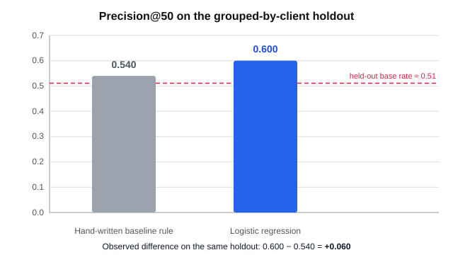

Which content page should you fix first?
An explainable machine-learning ranking that helps content teams prioritize potentially declining pages for human review.
Abstract
Search-ranked content succeeds, then quietly decays: rankings slip, clicks drop, and content teams usually notice too late. This project asks whether an explainable machine-learning model can prioritize, out of thousands of pages, which potentially declining page a human should review first. Using FlyRank's anonymized content-performance dataset — 30,000 pages across 32 pseudonymized clients over a 90-day window — each page is labeled from its observed trend (declining vs not), and target-derived fields are excluded from the model features. A logistic-regression ranking model measured Precision@50 of 0.600 compared with 0.540 for the hand-written baseline rule on the same grouped-by-client holdout, an observed difference of +0.060. The result is published as decision support for human content review — measured, directional, and never a causal claim or an automated content-editing system.
Introduction — the real FlyRank problem
FlyRank builds content as infrastructure: it researches, writes, and publishes content directly into a client's website, then watches search data and optimizes. The hard part is not writing good content once — it is noticing when that content quietly decays. Rankings slip, clicks drop, and most content teams notice too late, after traffic has already moved elsewhere.
The week-in, week-out decision this work supports is simple to state and hard to make well: out of thousands of pages, which one should a human fix first? That is a ranking problem on messy, real search data — exactly the pattern where a learned model can beat a fixed rule.
FlyRank's product already flags pages today: a health score, quick-win tags, and needs-attention flags. Those are hand-written if-this-then-that rules. They work, and they run in production — but rules run out where signals get many, tangled, and shifting, and no trained model has replaced them yet. This capstone sits in that gap.
It tests whether an explainable model can surface genuinely declining, high-opportunity pages earlier than the existing rule. Product flags are treated as the baseline to beat — never as model features. Client names, domains, URLs, and keywords appear nowhere in this public-safe analysis.
Data
The modeling dataset is the public-safe anonymized content-refresh release supplied with the internship repository: 30,000 anonymized content pages × 44 columns across 32 pseudonymized clients, with all metrics aggregated over a trailing 90-day window. It contains no client names, domains, URLs, titles, or private search queries.
- Unit of analysis: one anonymized content page.
- Label: a page is declining when its observed
trend_directionisdown(16,262 of 30,000 pages, 54.2%). - Excluded from features:
trend_directionandtrend_pct(label-derived — leakage), future-outcome fields, and client/content identifiers.
Earlier warehouse work examined the gated March 2026 release (~9.84 M daily-performance rows) for the data contract; the capstone ranking model uses the supplied 30,000-page public-safe modeling dataset. Only anonymized, aggregated results are presented.
Methodology
Features (all knowable before the outcome)
Seven observable signals: impressions_90d, clicks_90d, ctr, avg_position, days_since_last_update, content_age_days, word_count.
Model
A logistic-regression pipeline: median imputation for missing numerics → standardization → logistic regression (max_iter=1000, random_state=42). The model outputs a probability-like priority score used to rank pages.
Baseline (the hand-written rule we are trying to beat)
- Stale signal:
days_since_last_update ≥ 180with sufficient search visibility (impressions_90d ≥ 500). - Low-CTR signal:
impressions_90d ≥ 500, usable average position 1–20, andctr < 0.5%.
Validation design
Grouped-by-client train/test split: ~80% of clients train, ~20% are held out (25 train / 7 test clients; 23,837 / 6,163 rows), with zero client overlap so the test set represents unseen clients. Same split, same target, same metric for model and baseline. This tests generalization to unseen clients — it is not a future-time holdout.
Leakage checks
Explicit feature-level audit confirmed no target-derived or future-outcome field is in the final feature set (a deliberate label-copy feature reproduces the target exactly — 1.0 match — and was removed).
Results
| Approach | Precision@50 |
|---|---|
| Hand-written baseline rule | 0.540 |
| Logistic regression model | 0.600 |
| Observed difference | +0.060 |

What the model leans on
| Feature | Std coefficient |
|---|---|
| content_age_days | −0.38 |
| days_since_last_update | +0.23 |
| ctr | −0.18 |
| clicks_90d | −0.17 |
Coefficient signs describe associations in this dataset, not causation.
Limitations & honest framing
- Observational data. The analysis shows associations; it does not establish that changing a page will improve its performance.
- Validation population. The client-holdout tests generalization to unseen clients, not a future time period.
- Modest lift. The +0.060 Precision@50 difference is measured on one validation design and should not be treated as a guaranteed future performance level.
- Label definition. The declining label follows the dataset's existing trend rule, not an independent causal definition of content quality.
- Ranking is not an action guarantee. A high score means "review this page earlier" — not "this page needs a specific change."
- Human judgment remains necessary. Quality, search intent, business value, and technical context are not fully captured by seven features.
This work is decision support for human review, never an autonomous content-optimization system and never a claim of "predicting Google's algorithm."
Ranked recommendations
The action playbook turns the model ranking into a human-review queue with one transparent reason code per page. The queue answers: which pages should a human inspect first, and what observable signal explains that priority?
- Priority 1 —
STALE_REFRESH: high model priority + stale-content signal. Review for freshness, outdated information, and intent fit. - Priority 2 —
LOW_CTR_POSITION: sufficient impressions, position 1–20, CTR below 0.5%. Review title/snippet and search-intent alignment. - Priority 3 —
STALE_AND_LOW_CTR: both signals present; review freshness and presentation together. - Priority 4 —
MONITOR: no action signal; no immediate content change.
| Reason code | Pages | Share |
|---|---|---|
| MONITOR | 20,077 | 66.9% |
| LOW_CTR_POSITION | 9,749 | 32.5% |
| STALE_REFRESH | 164 | 0.55% |
| STALE_AND_LOW_CTR | 10 | 0.03% |
Every page in the queue requires human review before any action. The system should never automatically publish, rewrite, delete, or redirect content; it should never use client identifiers as features, and no future-outcome field ever justifies a current action.
Reproducibility
Everything reruns from the project repository with a fixed random_state=42. Notebooks, in order:
- w02 — task framing
- w03 — data contract
- w04 — baseline score
- w05 — model
- w06 — validation audit
- w07 — action playbook
- capstone — this paper's source notebook
The capstone notebook is the source of every number on this page: it builds the label, runs the grouped-by-client split, trains the model, compares it with the baseline, and exports the ranked queue and metrics.
Acknowledgments & data credit
This project was completed as part of the FlyRank ML Internship, using the internship's anonymized content-performance dataset under its data-use terms. Data credit: FlyRank (anonymized internship release; full pseudonymized warehouse at FlyRank/internship-warehouse, gated).